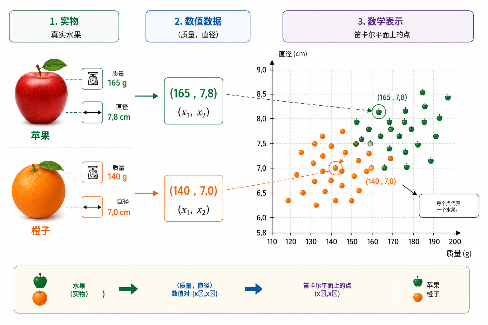
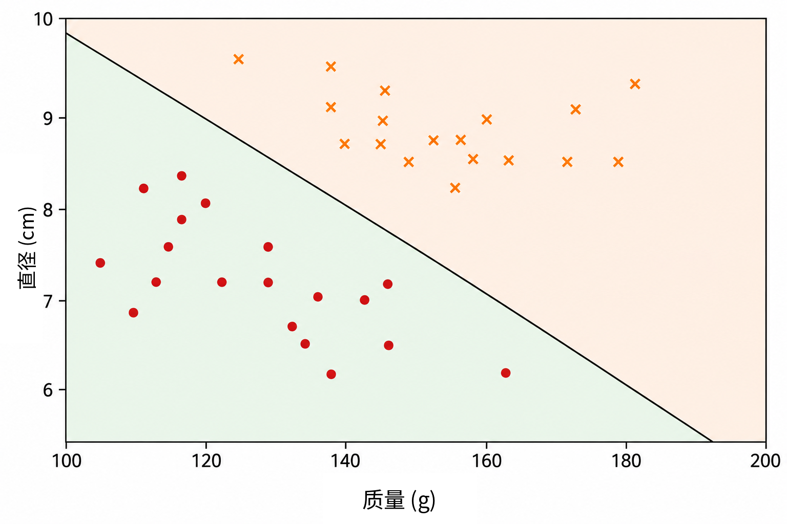
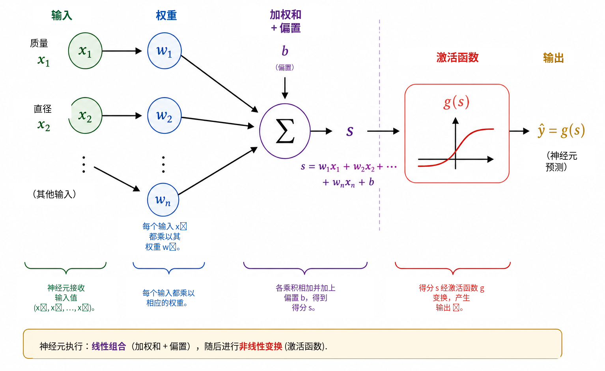
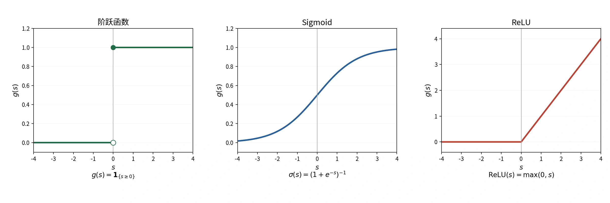
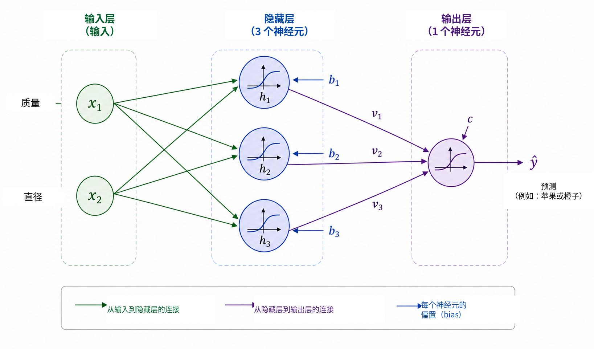
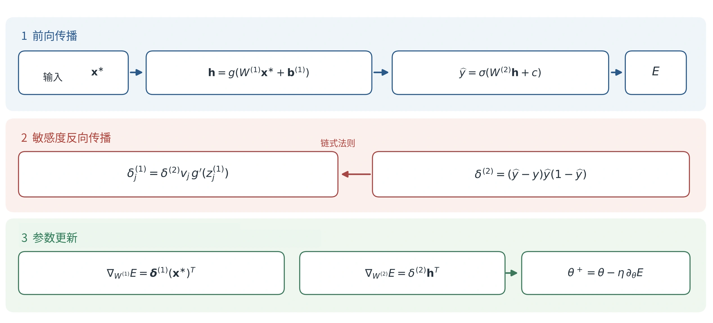
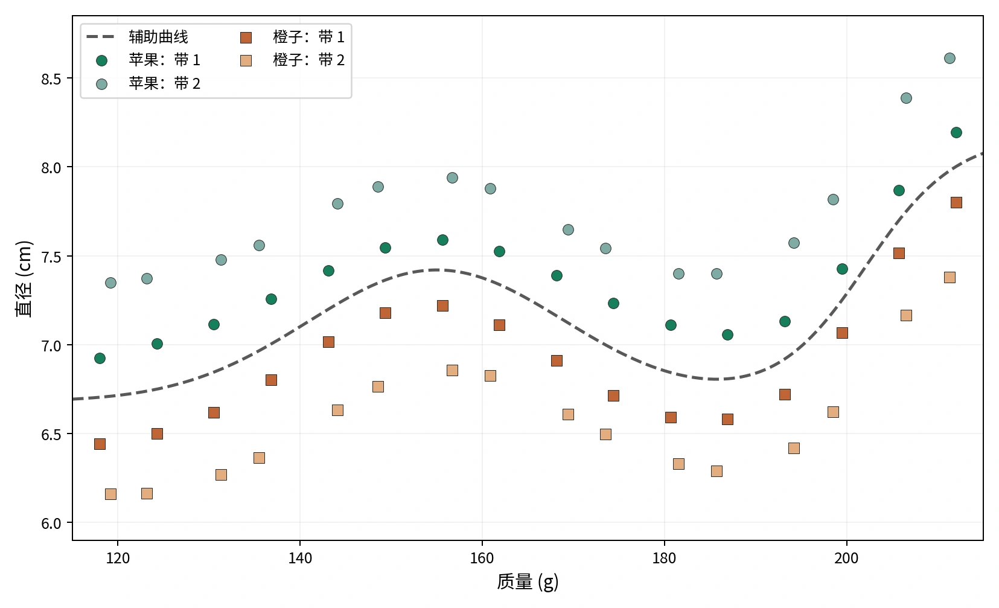
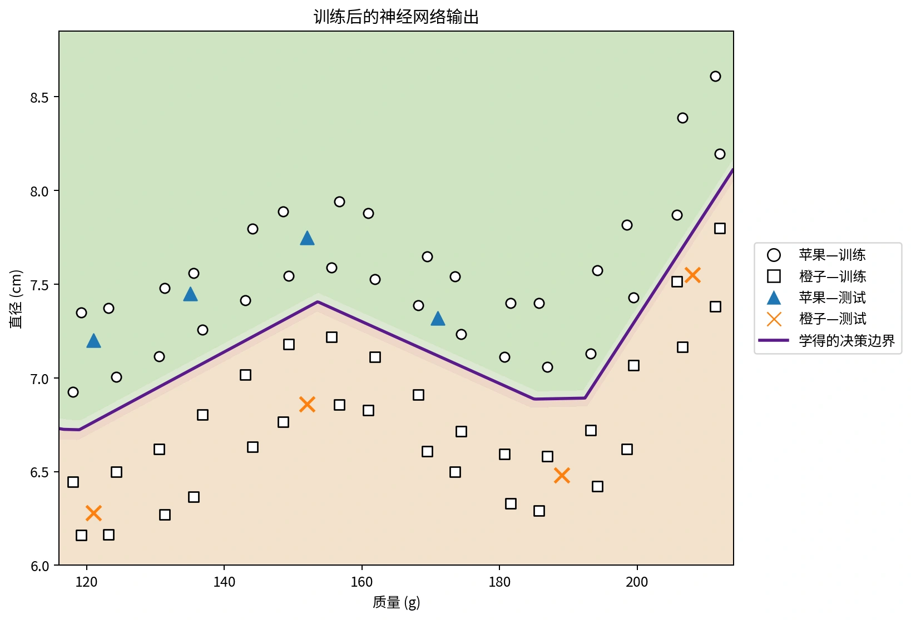

计算机何时能够学习？
在日常生活中，我们几乎在不知不觉中不断作出分类判断。看到一个水果时，我们很快就能判断它是苹果还是橙子；手机收到一条消息时，我们会区分正常对话和不受欢迎的广告；在医学分析中，可以把多项测量结果结合起来辅助决策；在金融机构中，发放信贷之前也会综合评估多种信息。在这些例子里，都是把若干特征放在一起考虑，以得到一个回答。
在许多传统计算机程序中，产生这个回答的规则由程序员明确写出。当规则已知并且能够清楚表述时，这种方法非常有效。然而，当数据变化很大，或者难以事先列出作出良好决策所需的每一个条件时，这种方法就会变得不那么有效。于是自然产生一个问题：
我们能否构造一个程序，使它从样本中学习决策规则，
而不是事先把规则直接交给它？
这正是机器学习的核心思想之一。机器学习是人工智能的一个领域，研究如何利用数据拟合模型 。在监督学习问题中，算法得到一组样本以及每个样本的正确答案，我们希望得到一个模型，使它对训练过程中没有见过的样本也能作出有用的预测。在为这一目的发展出的众多模型中，人工神经网络已经在图像识别、语言处理、信号分析和时间序列预测等应用中占据重要位置 。
Batista 和 Martins 已经在 Professor de Matemática Online 中讨论过神经网络如何成为数学、计算与学校教育之间的桥梁 。他们介绍了一项结合教师教育、Python 和数字识别的活动。本文采取一条互补的路径。我们的主要目标是揭示一个小型神经网络内部的数学结构，从解析几何出发，逐步推进到梯度计算以及反向传播的手工实现。
尽管现代应用可能非常复杂，神经网络的数学核心却可以用相对熟悉的概念来引入。在最基本的层面上，神经网络就是若干函数的复合，而这些函数中的参数根据数据进行调整。我们先从一个简单的几何问题开始，把一条分隔直线重新解释为人工神经元，再连接多个神经元，研究激活函数的作用，并说明如何利用导数自动调整网络参数。随后，我们用 Python 实现一个完整的小型示例，并始终保持方程与代码之间的直接对应关系。
问题的数学表示
为了理解神经网络如何工作，我们从一个有意简化的问题开始：区分苹果和橙子。水果具有许多可用于这项任务的特征，例如颜色、质量、直径、纹理和气味。不过，一个初始数学模型并不需要立即包含全部复杂性。我们只使用两个容易测量的量：以克为单位的质量，以及以厘米为单位的直径。
因此，每个水果用一个有序对表示， \[(x_1,x_2),\] 其中 \[x_1=\text{质量} \qquad\text{且}\qquad x_2=\text{直径}.\]
于是，有序对 \((155,\;7.2)\) 表示一个质量为 \(155\) g、直径为 \(7.2\) cm 的水果。把真实物体替换为两个数值测量后，我们就把每个水果对应到笛卡尔平面中的一个点：第一坐标表示质量，第二坐标表示直径。图 1 用一组假想的苹果和橙子说明了这种表示。

这种转换改变了问题表面上的性质。我们不再直接问“如何识别苹果或橙子”，而是可以提出一个几何问题：如何在平面中把属于两类的点分开？这种视角转换是机器学习中的基本思想。图像、文本、声音和实验信号都必须先转换成数值表示，算法才能处理它们。在我们的例子中，每个对象只有两个坐标；而在真实应用中，一种表示可能包含数百、数千甚至数百万个分量。原理并没有改变：每个样本都对应一组数，模型的任务是寻找一个规则，把这种表示映射到期望的答案。
我们从最简单的几何规则开始，考察是否只用一条直线就能把苹果点和橙子点充分分开。
用一条直线进行分类
当每个水果都已经表示成笛卡尔平面中的一个点之后，分类就变成了一个几何问题：一条直线能否把苹果和橙子分开？这个问题体现了机器学习中一类重要方法的基本思想，这类方法称为线性分类器。
考虑一条穿过数据点云的直线，如图 2 所示。这条直线把平面分成两个半平面。如果大多数苹果点位于一侧，而大多数橙子点位于另一侧，那么一个新水果相对于这条直线的位置就可以用作分类规则。测量其质量和直径后，我们把水果表示成一个点，然后判断该点位于直线的哪一侧。

在笛卡尔平面 \((x_1,x_2)\) 中，一条直线可以写成 \[w_1x_1+w_2x_2+b=0, \qquad (w_1,w_2)\neq(0,0).\]
向量 \((w_1,w_2)\) 与直线垂直，因此决定直线的方向；参数 \(b\) 则参与决定直线的位置。这种表示存在一个小的冗余：如果同时把 \(w_1\)、\(w_2\) 和 \(b\) 乘以同一个非零常数，得到的仍然是完全相同的直线。因此，描述边界的参数并不唯一。参数的数值解释还依赖变量的尺度。由于质量用克测量、直径用厘米测量，在不考虑单位差异的情况下，不应直接比较 \(w_1\) 和 \(w_2\) 的数值大小。
直线方程本身就提供了一个简单办法，用来判断一个点位于边界的哪一侧。定义得分 \[s(x_1,x_2)=w_1x_1+w_2x_2+b.\]
如果 \(s(x_1,x_2)=0\)，点在直线上；如果 \(s(x_1,x_2)>0\)，点在一个半平面中；如果 \(s(x_1,x_2)<0\)，点在另一个半平面中。若规定正得分对应苹果、负得分对应橙子，则规则为 \[\begin{cases} s(x_1,x_2)\geq 0 & \Longrightarrow \text{苹果},\\ s(x_1,x_2)<0 & \Longrightarrow \text{橙子}. \end{cases}\]
例如，考虑由下列参数定义的边界： \[w_1=\frac{1}{10}, \qquad w_2=2, \qquad b=-30.\] 对于一个质量为 \(160\) g、直径为 \(7.8\) cm 的水果， \[\begin{aligned} s &=\frac{1}{10}\times160+2\times7.8-30\\ &=16+15.6-30\\ &=1.6. \end{aligned}\] 因为得分为正，所以该点位于我们指定为苹果的半平面中。因此，这个分类器会把该水果标记为苹果。
并非所有 \(w_1\)、\(w_2\) 和 \(b\) 的取值都能产生良好的分类。有些直线不能很好地分开两组数据，而另一些直线会产生更少的错误。学习问题的核心正是：利用已经带标签的样本，确定能够减小某种模型误差度量的参数值。换句话说，我们不直接编程指定直线的位置，而是希望算法根据数据自动调整其系数。
当两类数据近似线性可分时，一条直线可能已经足够有效。更复杂的数据集则可能需要非线性边界。在讨论这一限制之前，我们先把刚才构造的分类器重新解释为一个基本计算单元：人工神经元。
人工神经元
上一节中，我们使用表达式 \[s=w_1x_1+w_2x_2+b\] 来判断一个水果位于直线的哪一侧。同一个表达式也可以看作人工神经元计算过程的第一阶段。神经元接收数值输入，利用权重和偏置把它们组合起来，然后应用一个数学函数得到输出。
在我们的例子中，输入是质量 \(x_1\) 和直径 \(x_2\)。每个输入都乘以一个称为权重的参数；这些乘积再与常数项 \(b\) 相加。这个常数项称为偏置。图 3 示意了这一计算过程。

权重决定输入的变化如何影响得分。如果固定 \(x_2\) 和所有其他量，那么 \(x_1\) 的变化 \(\Delta x_1\) 会使 \(s\) 改变 \(w_1\Delta x_1\)。类似地，\(x_2\) 的变化 \(\Delta x_2\) 会使得分改变 \(w_2\Delta x_2\)。权重的符号也很重要：正权重意味着输入增大时得分也增大，而负权重会产生相反效果。当不同变量具有不同单位和尺度时，这种解释需要谨慎使用。因此，在实际实现中，训练前通常会对输入数据进行归一化或标准化。
偏置 \(b\) 是仿射变换中的常数项。从几何上看，它允许决策边界发生平移。如果 \(b=0\)，方程 \[w_1x_1+w_2x_2=0\] 迫使直线经过原点。加入偏置后，边界可以移动到其他位置。等价地，当 \(x_1=x_2=0\) 时，得分就是 \(s=b\)。
得分本身不一定是神经元的最终输出。一般情况下，要对它应用一个激活函数 \(g\)： \[\widehat{y}=g(s)=g\left(w_1x_1+w_2x_2+b\right).\] 因此，计算可以分成两个阶段： \[\begin{aligned} s &= w_1x_1+w_2x_2+b,\\[4pt] \widehat{y} &= g(s). \end{aligned}\]
沿用上一节的参数值可得 \(s=1.6\)。如果选择阶跃函数 \[g(s)= \begin{cases} 1, & s\geq0,\\ 0, & s<0, \end{cases}\] 那么 \(\widehat{y}=g(1.6)=1\)。按照我们的约定，这个水果被分类为苹果。采用这种激活函数时，当 \(s\) 穿过零时分类结果发生改变，因此类别边界恰好是 \[w_1x_1+w_2x_2+b=0.\]
因此，单个神经元是一个带有可调参数的简单数学对象。它真正的重要性来自把许多这样的单元连接起来。不过，在构建网络之前，我们需要先理解为什么激活函数是必不可少的。
为什么需要激活函数？
神经元首先通过仿射变换计算一个得分，然后再应用激活函数。如果神经网络要表示复杂关系，这第二个阶段是不可缺少的。为了看清原因，可以设想一个完全不使用激活函数的网络。此时每个单元都具有形式 \[y=w_1x_1+w_2x_2+b.\]
先看一个一维例子。假设第一个单元产生 \[h=ax+b\] 第二个单元计算 \[y=ch+d.\] 代入可得 \[y=c(ax+b)+d=acx+(cb+d),\] 它仍然只是 \(x\) 的一个仿射函数。在多维情况下也完全一样：仿射变换的复合仍然是仿射变换。因此，如果没有非线性操作，即使增加许多层，也不会从根本上提高网络的表达能力；整个复合实际上可以被一个单独的仿射变换替代。
激活函数打破了这一限制。计算出得分 \(s\) 后，神经元再应用一个通常为非线性的映射 \[h=g(s).\] 当多个这样的单元连接起来时，所得复合一般不能再化简为一个仿射变换。由此，网络就能够构造更复杂的决策边界。
最简单的激活函数是阶跃函数， \[g(s)= \begin{cases} 1, & s\geq0,\\ 0, & s<0. \end{cases}\] 它产生一个二元决策，非常适合用来理解分类的基本思想。然而，它在 \(s\neq0\) 时导数为零，在 \(s=0\) 时又不可导。由于基于梯度的训练需要通过导数判断参数应该如何改变，阶跃函数并不适合这种训练机制。
一种替代方案是 sigmoid 函数， \[\sigma(s)=\frac{1}{1+e^{-s}}.\] 它把任意实数映射到严格位于 \(0\) 与 \(1\) 之间的值。当 \(s\) 很负时，输出趋近于 \(0\)；当 \(s\) 很正时，输出趋近于 \(1\)；在两端之间，变化是平滑的。Sigmoid 在每一点都可导，并且 \[\sigma'(s)=\sigma(s)\bigl(1-\sigma(s)\bigr).\] 由于输出位于 \(0\) 与 \(1\) 之间，它常用于二分类器的输出层。在采用适当损失函数的概率建模框架下，输出可以解释为类别 \(1\) 的概率估计。不过，在隐藏层中，sigmoid 可能带来一个困难：当输入绝对值很大时，它的导数会非常小，从而促成深层网络中的梯度消失问题。
隐藏层中一种广泛使用的激活函数是 ReLU（Rectified Linear Unit，修正线性单元）， \[\mathrm{ReLU}(s)=\mathrm{max}(0,s) = \begin{cases} 0, & s<0,\\ s, & s\geq0. \end{cases}\] 虽然它由两个线性片段构成，但 ReLU 并不是全局线性的。其导数在 \(s<0\) 时为 \(0\)，在 \(s>0\) 时为 \(1\)。在 \(s=0\) 处通常意义下的导数不存在，软件实现会为梯度采用某种约定。对于正输入，导数不会随着 \(s\) 增大而缩小，因此可以避免 sigmoid 的一种饱和机制。
图 4 直观比较了这三种激活函数：阶跃函数的突然跳变、sigmoid 的平滑过渡，以及 ReLU 在零点处斜率的变化。

它们的主要性质总结如下。
| 函数 | 输出 | 导数 | 典型用途 |
|---|---|---|---|
| 阶跃函数 | \(\{0,1\}\) | \(s\neq0\) 时为零；\(s=0\) 时不存在 | 历史模型和教学示例 |
| Sigmoid | \((0,1)\) | 对每个 \(s\) 都存在 | 二分类的输出层 |
| ReLU | \([0,\infty)\) | \(s<0\) 时为 \(0\)，\(s>0\) 时为 \(1\) | 隐藏层 |
这些函数在细节上不同，但它们共同的概念作用都是引入非线性。正是这种非线性，使下一节中的小型网络能够表示一条直线无法描述的关系。
希望进一步学习的读者可以参考 Haykin 对神经网络的经典论述，以及 Goodfellow、Bengio 和 Courville 对激活函数和深层网络训练的更广泛讨论。Nielsen 免费公开的教材 特别适合用来建立对神经元、激活函数和学习过程的直觉。
构建一个小型神经网络
现在考虑一个具有两个输入、一个包含三个神经元的隐藏层以及一个输出神经元的网络。输入仍然是 \[x_1=\text{质量}, \qquad x_2=\text{直径},\] 并且这两个输入都连接到每一个隐藏层神经元，如图 5 所示。

记隐藏层的输出为 \(h_1\)、\(h_2\) 和 \(h_3\)。每个神经元都接收相同的两个输入，但具有各自的权重和偏置： \[\begin{aligned} h_1&=g\left(w_{11}x_1+w_{12}x_2+b_1\right),\\[4pt] h_2&=g\left(w_{21}x_1+w_{22}x_2+b_2\right),\\[4pt] h_3&=g\left(w_{31}x_1+w_{32}x_2+b_3\right). \end{aligned}\]
尽管三个神经元都接收相同的质量和直径，它们仍然可以产生不同的响应，因为参数不同。在训练过程中，这些参数会被调整，使中间激活值逐渐成为对分类有用的量。
三个量 \(h_1\)、\(h_2\) 和 \(h_3\) 接着传递给输出神经元。输出神经元计算 \[s_{\mathrm{out}}=v_1h_1+v_2h_2+v_3h_3+c\] 并产生 \[\widehat{y}=g_{\mathrm{out}}\left(s_{\mathrm{out}}\right).\] 对于我们的二分类问题，在输出层采用 sigmoid： \[\widehat{y}=\sigma\left(v_1h_1+v_2h_2+v_3h_3+c\right), \qquad 0<\widehat{y}<1.\]
令苹果对应 \(y=1\)、橙子对应 \(y=0\)，使用阈值 \(0.5\) 时，类别决策为 \[\widehat{y}\geq0.5 \Longrightarrow \text{苹果}, \qquad \widehat{y}<0.5 \Longrightarrow \text{橙子}.\] 因此，接近 \(1\) 的值与苹果强相关，而接近 \(0\) 的值与橙子相关。正如前面所指出的，要把 \(\widehat{y}\) 的数值严格解释为概率，还需要关于模型及其训练过程的其他假设。对于这里采用的分类规则，只需把 \(\widehat{y}\) 看成网络的连续输出即可。
这个结构的核心特征是中间表示 \[(x_1,x_2) \longrightarrow (h_1,h_2,h_3) \longrightarrow \widehat{y}.\] 网络接收两个特征，在给出最终答案之前先构造三个新的量。这些激活值不是人工预先指定的；它们取决于权重和偏置，因此会随着参数训练而改变。
尽管网络很小，它已经有十三个可调参数。三个隐藏神经元包含 \[3(2+1)=9\] 个参数，输出神经元再贡献 \[3+1=4.\] 因此， \[9+4=13.\]
用矩阵记号可以更清楚地看到同样的参数计数。定义 \[\mathbf{x}= \begin{bmatrix} x_1\\x_2 \end{bmatrix}, \qquad W^{(1)}= \begin{bmatrix} w_{11}&w_{12}\\ w_{21}&w_{22}\\ w_{31}&w_{32} \end{bmatrix}, \qquad \mathbf{b}^{(1)}= \begin{bmatrix} b_1\\b_2\\b_3 \end{bmatrix}.\] 于是隐藏层可以紧凑地写成 \[\mathbf{h}=g\left(W^{(1)}\mathbf{x}+\mathbf{b}^{(1)}\right),\] 其中 \(g\) 对每个分量分别作用。对于输出层， \[\widehat{y} = \sigma\left(W^{(2)}\mathbf{h}+b^{(2)}\right),\] 其中 \[W^{(2)}= \begin{bmatrix} v_1&v_2&v_3 \end{bmatrix}.\]
这种记号已经预示了后面 Python 程序中会出现的结构。当一个水果被送到输入端，我们依次计算各层激活值直到得到 \(\widehat{y}\) 时，这个过程称为前向传播，也称为一次前向计算（forward pass）。现在剩下的核心问题是：如何自动确定这十三个参数，使预测与数据相匹配？
神经网络如何学习？
神经网络的权重和偏置并非预先给定，而是根据具有正确类别标签的样本进行调整。学习是反复执行前向传播、损失计算、梯度计算与参数更新的过程（图 6）。其关键在于：借助链式法则，可以计算每一个权重或偏置的微小变化如何影响损失。
为了调整参数，首先需要用数值衡量预测与正确答案之间的差异。这就是损失函数：它为每次预测赋予惩罚，并允许比较不同的权重和偏置。与单纯统计分类错误次数不同，连续的损失函数能够区分更接近目标和更远离目标的预测，其导数为训练提供方向。
考虑一个质量为 \(140\) g、直径为 \(7.0\) cm 的橙子（\(y=0\)）。令网络输出为 \(\widehat y\in(0,1)\)，对单个样本使用平方损失
\[\label{eq:perda} E=\frac12(\widehat y-y)^2.\]
这里 \(y\) 是真实类别，\(\widehat y\) 是预测。损失非负，且预测趋近标签时损失趋近于零。对同一个橙子，预测 \(0.80\) 和 \(0.60\) 分别得到 \(E=0.32\) 和 \(E=0.18\)。按照阈值 \(0.5\)，两者都错判为苹果，但损失能够区分哪一个预测更加接近正确值。系数 \(1/2\) 不改变最优解，只是简化求导。
由于网络应当从许多样本而非单个水果中学习，需要综合每个样本的损失。对 \(N\) 个观测，定义平均损失
\[\label{eq:perda_media} J=\frac1N\sum_{i=1}^{N}E_i.\]
平均损失概括了模型在训练集上的表现，也是调整参数时希望减小的量。但是，最小化 \(J\) 本身并不能保证在新样本上的预测质量。我们采用代数形式简单的式 perda 进行主要推导，随后比较它与二元交叉熵的梯度，而不改变计算实验 [2, 3]。

若 \(\theta\) 表示某个权重或偏置，则 \(\partial J/\partial\theta\) 表示平均损失对该参数的局部敏感度。一步梯度下降为
\[\label{eq:descida} \theta_{\mathrm{new}}=\theta_{\mathrm{old}}-\eta\frac{\partial J}{\partial\theta},\qquad \eta>0.\]
学习率 \(\eta\) 控制更新步长：过小会使收敛缓慢，过大可能导致振荡或发散。如果像第 8 节的程序那样在每个样本之后更新参数，就用 \(\partial E_i/\partial\theta\) 代替 \(\partial J/\partial\theta\)。本文采用的便是这种随机梯度下降法（SGD）。
2–3–1 网络中的链式法则
考虑图 5 的网络：三个隐藏神经元采用 ReLU，输出神经元采用 sigmoid。由于输入分别是质量（g）和直径（cm），数值尺度并不相同。为了改善参数拟合的数值条件，将每个特征转化为 \(x_j^{\ast}=(x_j-\mu_j)/\sigma_j\)，其中 \(\mu_j\) 是参考均值，\(\sigma_j>0\) 是参考标准差。这样可以得到尺度可比的无量纲输入，便于选择优化步长。在计算训练中，这些统计量只从训练集计算，避免测试数据泄漏。下面的数值示例则为简化计算采用固定的中心和尺度。对标准化输入 \(\mathbf{x}^{\ast}=(x_1^{\ast},x_2^{\ast})^{\mathsf T}\)，前向传播为
\[\label{eq:forward} \begin{aligned} \mathbf{z}^{(1)}&=W^{(1)}\mathbf{x}^{\ast}+\mathbf{b}^{(1)}, &\mathbf{h}&=\operatorname{ReLU}(\mathbf{z}^{(1)}),\\ z^{(2)}&=W^{(2)}\mathbf{h}+c, &\widehat y&=\sigma(z^{(2)}). \end{aligned}\]
其中 \(c=b^{(2)}\) 是输出偏置，\(W^{(2)}=(v_1,v_2,v_3)\)。反向传播从输出神经元开始，逐层应用链式法则：
\[\label{eq:delta_saida} \begin{aligned} \delta^{(2)}:=\frac{\partial E}{\partial z^{(2)}} &=\underbrace{\frac{\partial E}{\partial\widehat y}}_{\widehat y-y} \underbrace{\frac{\partial\widehat y}{\partial z^{(2)}}}_{\widehat y(1-\widehat y)} =(\widehat y-y)\widehat y(1-\widehat y),\\ \frac{\partial E}{\partial v_j}&=\delta^{(2)}h_j, \qquad \frac{\partial E}{\partial c}=\delta^{(2)}. \end{aligned}\]
由于每个隐藏激活值 \(h_j\) 也依赖于其权重和偏置，需要计算隐藏神经元的敏感度：
\[\label{eq:delta_oculta} \begin{aligned} \delta_j^{(1)}:=\frac{\partial E}{\partial z_j^{(1)}} &=\delta^{(2)}v_j\,\operatorname{ReLU}'(z_j^{(1)}),\\ \frac{\partial E}{\partial w_{jk}} &=\delta_j^{(1)}x_k^{\ast},\qquad \frac{\partial E}{\partial b_j}=\delta_j^{(1)}. \end{aligned}\]
ReLU 在零点不可微。需要时采用计算约定 \(\operatorname{ReLU}'(0)=0\)。\(\delta^{(2)}\) 和 \(\delta_j^{(1)}\) 是损失的局部敏感度，不是在网络中传播的“物理误差”。实现中复用这些量，就不必对全部 13 个参数分别从头求导。
一次完整的数值参数更新
为使计算清楚，仅在这个示例中，取质量的参考中心与尺度为 \(160\) g、\(20\) g，直径的为 \(7.5\) cm、\(0.5\) cm。水果 \((140\,\mathrm{g},7.0\,\mathrm{cm})\) 对应的无量纲输入为
\[\label{eq:exemplo_entrada} \mathbf{x}^{\ast}=\begin{bmatrix}(140-160)/20\\(7.0-7.5)/0.5\end{bmatrix} =\begin{bmatrix}-1\\-1\end{bmatrix}.\]
这些参考值只为演示而固定。第 8 节的程序将直接从训练数据计算均值和标准差。
选择以下 13 个初始参数：
\[\label{eq:param_iniciais} W^{(1)}=\begin{bmatrix} 0.2&0.1\\-0.3&0.2\\0.1&-0.4 \end{bmatrix},\quad \mathbf{b}^{(1)}=\begin{bmatrix}\phantom{-}0.5\\\phantom{-}0.2\\-0.5\end{bmatrix},\quad W^{(2)}=\begin{bmatrix}\phantom{-}0.5&-0.4&\phantom{-}0.3\end{bmatrix},\quad c=1.\]
由式 forward 依次得到
\[\label{eq:exemplo_forward} \begin{gathered} \mathbf{z}^{(1)}=(0.2,\;0.3,\;-0.2)^{\mathsf T},\qquad \mathbf{h}=(0.2,\;0.3,\;0)^{\mathsf T},\\ z^{(2)}=0.5(0.2)-0.4(0.3)+1=0.98,\\ \widehat y=\sigma(0.98)\simeq0.727108,\qquad E\simeq0.264343. \end{gathered}\]
初始预测对应错误的类别。根据式 delta_saida 和 delta_oculta，
\[\label{eq:exemplo_gradientes} \begin{gathered} \delta^{(2)}\simeq0.144274,\qquad \boldsymbol{\delta}^{(1)}\simeq(0.072137,\;-0.057710,\;0)^{\mathsf T},\\ \frac{\partial E}{\partial W^{(2)}}\simeq (0.028855,\;0.043282,\;0),\qquad \frac{\partial E}{\partial W^{(1)}}\simeq \begin{bmatrix}-0.072137&-0.072137\\\phantom{-}0.057710&\phantom{-}0.057710\\\phantom{-}0&\phantom{-}0\end{bmatrix}. \end{gathered}\]
第三个隐藏神经元处于非激活状态（\(z_3^{(1)}<0\)），因此这一步中与它相连的输入权重及偏置的梯度为零。取 \(\eta=0.05\)，对所有参数同时执行 \(\theta_{\mathrm{new}}=\theta_{\mathrm{old}}-0.05\,\partial E/\partial\theta\)。表 1 列出 13 项更新中的若干代表值，其余遵循同样的公式。
| 参数 \(\theta\) | 初始值 | \(\partial E/\partial\theta\) | 更新后 |
|---|---|---|---|
| \(v_1\) | \(0.500000\) | \(0.028855\) | \(0.498557\) |
| \(v_2\) | \(-0.400000\) | \(0.043282\) | \(-0.402164\) |
| \(c\) | \(1.000000\) | \(0.144274\) | \(0.992786\) |
| \(w_{11}\) | \(0.200000\) | \(-0.072137\) | \(0.203607\) |
| \(w_{21}\) | \(-0.300000\) | \(0.057710\) | \(-0.302885\) |
| \(b_1\) | \(0.500000\) | \(0.072137\) | \(0.496393\) |
| \(w_{31}\) | \(0.100000\) | \(0\) | \(0.100000\) |
使用更新后的所有参数重新前向传播，可得 \(\widehat y_{\mathrm{new}}\simeq0.723717\) 和 \(E_{\mathrm{new}}\simeq0.261883\)，说明一步更新便降低了损失。分类尚未改变，这是预期的；学习需要在多个样本和多个轮次上不断重复。
平方误差与交叉熵
平方误差有利于清晰展示链式法则，但对于 sigmoid 输出的二分类，也常使用二元交叉熵。对 \(y\in\{0,1\}\)、\(\widehat y=\sigma(z)\)，单个观测的损失为
\[\label{eq:entropia_cruzada} E_{\mathrm{CE}}=-y\ln\widehat y-(1-y)\ln(1-\widehat y).\]
平方损失惩罚预测与标签之间的数值差，而交叉熵对给实际标签分配很小概率的预测施加较大惩罚；这里将 \(\widehat y\) 解释为类别 \(1\) 的概率。对训练而言，最重要的区别出现在对输出神经元得分 \(z\) 求导时。利用 \(\sigma'(z)=\widehat y(1-\widehat y)\)，可得
\[\label{eq:derivada_entropia_cruzada} \begin{aligned} \frac{\partial E_{\mathrm{CE}}}{\partial z} &=\left(-\frac{y}{\widehat y}+\frac{1-y}{1-\widehat y}\right) \widehat y(1-\widehat y) =\widehat y-y,\\ \frac{\partial E_{\mathrm{SE}}}{\partial z} &=(\widehat y-y)\widehat y(1-\widehat y), \qquad E_{\mathrm{SE}}=\tfrac12(\widehat y-y)^2. \end{aligned}\]
为了单独说明这一差别，假设橙子（\(y=0\)）的预测为 \(\widehat y=0.80\)。此时 \(E_{\mathrm{SE}}=0.32\)、\(E_{\mathrm{CE}}=-\ln(0.20)\simeq1.60944\)，对 \(z\) 的导数分别为 \(0.128\) 和 \(0.80\)。在 \(\eta=0.05\) 时，只更新输出偏置得到的变化量分别是 \(\Delta c=-0.0064\) 与 \(\Delta c=-0.0400\)。这一独立示例并不替换前述完整计算的数值。
交叉熵的输出层敏感度不再乘以 \(\widehat y(1-\widehat y)\)，因而在预测严重错误且 sigmoid 饱和时，避免了输出层额外的梯度衰减。这既不能消除其他层的微小梯度，也不能保证在所有情况下训练更快。两种损失的尺度不同，不能直接比较其数值作为预测质量的衡量。主程序保留平方误差，以保持数值更新示例完全可复现。
训练轮次与泛化
完整处理一遍训练样本称为一个轮次（epoch）。下一节的程序每轮打乱样本，并在处理每个水果后更新参数。网络结构不变，但权重、偏置和决策边界会变化。训练损失下降并不保证对新数据预测得好。这种能力称为泛化；如果对训练数据拟合过度，损害新样本的表现，则称为过拟合。在更广泛的研究中，应使用独立的训练、验证和测试集来选择超参数并进行较少偏差的评估 [2, 3]。
从数学到 Python
现在只使用 NumPy 实现第 7 节推导的前向传播、链式法则和随机更新 [4]。为了得到非线性决策边界，将隐藏层从 3 个扩展至 12 个 ReLU 神经元。所得 \(2\)–\(12\)–\(1\) 网络共有 \(12(2+1)+(12+1)=49\) 个可训练参数，但使用的是同一组公式。
用于演示的合成数据
实验使用 \(64\) 个合成训练样本，在质量–直径平面上分为四条带，每条 \(16\) 点，另设八个仅供图示的测试样本。两条苹果带位于参考曲线上方，两条橙子带位于下方。小幅确定性偏移避免点列过于规则。这些数值只是为了展示视觉上合理的分布和非线性决策边界；它们既不是实验测量，也不代表水果的物理模型。
参考曲线仅用于生成样本。它不会作为网络输入，不出现在损失中，也不参与反向传播。训练只使用质量–直径数据对及类别标签。为了准确复现图 7 的数据，附录 A 给出生成公式和位移。

图 7 显示函数
construct_data()
实际生成的点。虚线仅属于合成数据构造过程，并非学到的边界。额外八个点仅用于最后的图示，不参与标准化统计量的计算。
标准化与训练设置
质量和直径具有不同的单位和尺度，因此将每个输入转化为无量纲变量：
\[\label{eq:padronizacao} x_j^{\ast}=\frac{x_j-\mu_j}{\sigma_j},\quad \mu_j=\frac1N\sum_{i=1}^N x_{ij},\quad \sigma_j=\sqrt{\frac1N\sum_{i=1}^N(x_{ij}-\mu_j)^2}.\]
均值 \(\mu_j\) 对特征 \(j\) 进行中心化，标准差 \(\sigma_j\) 重新缩放；本例 \(N=64\)。两个统计量都只从训练数据计算，再原样应用于测试样本。要求 \(\sigma_j>0\)。绘制预测网格时同样应用这一变换。
权重由均值为零、标准差为 \(0.1\)
的正态分布初始化，随机种子为 \(42\)。小随机值打破隐藏神经元之间的对称性，但正态分布只是一个简单选择，并非普适建议。对于大型网络，初始化尺度应考虑架构和激活函数。偏置初始为零。ReLU
在 \(s=0\) 不可微，因此
relu_derivative()
按计算约定将该点的值取为零；这一约定本身不能确保收敛。
学习率 \(\eta=0.05\) 是保守而非最优的选择。固定种子和数据，在 \(1000\) 个轮次后得到表 2 的敏感性比较。在本数据集上，测试的最大学习率收敛更快，但并不能据此认为它普遍适用。保留 \(0.05\) 是因为它使训练稳定，损失历史易于检查。
| \(\eta\) | 平均损失 \(J\) | 正确数（共64个） |
|---|---|---|
| \(0.005\) | \(0.041871\) | \(55\) |
| \(0.05\) | \(0.006485\) | \(64\) |
| \(0.2\) | \(0.000106\) | \(64\) |
完整的 Python 实现
完整程序按函数和执行顺序列于代码 1–10。连续的十个代码块构成补充提供的文件
neural_network.py。
01 — 环境配置
"""Pedagogical example: fruit classification using a 2-12-1 network.
Dependencies: numpy and matplotlib. Run: python neural_network.py.
"""
import numpy as np
import matplotlib.pyplot as plt
from matplotlib.lines import Line2D
02 — ReLU 激活
def relu(s):
"""Hidden-layer activation: ReLU(s) = max(0,s)."""
return np.maximum(0, s)
03 — ReLU 的计算导数
def relu_derivative(s):
# ReLU is not differentiable at s=0; its computational derivative is set to 0.
# This convention only defines the backpropagation step at that point.
return (s > 0).astype(float)
04 — Sigmoid 激活
def sigmoid(s):
"""Output activation, with values between 0 and 1."""
return 1 / (1 + np.exp(-s))
05 — 用于生成数据的辅助曲线
def reference_curve(m):
# Artificial curve (cm): offset + Gaussian bump + logistic rise.
# The constants were chosen to construct a nonlinear reference curve;
# they are neither experimental measurements nor fitted parameters.
return (6.68 + 0.74*np.exp(-((m-155)/20)**2)
+ 1.50/(1 + np.exp(-(m-202)/5)))
06 — 合成训练数据和图示测试样本
def construct_data():
# 16 masses in each of four bands: a1, a2, l1, l2.
masses_1 = np.linspace(118, 212, 16)
# Small deterministic offsets avoid identical masses.
masses_2 = masses_1 + np.array([
1.2, -1.1, 0.8, -1.3, 1.0, -0.8, 1.1, -1.0,
1.3, -0.9, 0.9, -1.2, 1.0, -1.0, 0.8, -0.7
])
k = np.arange(16)
# Apples: two bands above the curve, with small variations in cm.
a1 = np.column_stack([
masses_1,
reference_curve(masses_1) + 0.22 + 0.05*np.sin(0.8*k)
])
a2 = np.column_stack([
masses_2,
reference_curve(masses_2) + 0.58 + 0.06*np.cos(0.45*k)
])
# Oranges: two bands below the reference curve.
l1 = np.column_stack([
masses_1,
reference_curve(masses_1) - (0.22 + 0.04*np.cos(0.7*k))
])
l2 = np.column_stack([
masses_2,
reference_curve(masses_2) - (0.55 + 0.05*np.sin(0.5*k))
])
X_train = np.vstack([a1, a2, l1, l2])
y_train = np.array([1.0]*32 + [0.0]*32)
# Eight illustrative examples; not an extensive statistical test.
X_test = np.array([
[121.0, 7.20], [135.0, 7.45],
[152.0, 7.75], [171.0, 7.32],
[121.0, 6.28], [152.0, 6.86],
[189.0, 6.48], [208.0, 7.55]
])
y_test = np.array([1, 1, 1, 1, 0, 0, 0, 0], dtype=float)
return X_train, y_train, X_test, y_test
07 — 由前向传播进行预测
def predict(X, mean, std, W1, b1, W2, b2):
# x_j^* = (x_j - mu_j)/sigma_j, using training-set statistics.
Xn = (X - mean) / std
# Forward pass in matrix notation (one row per fruit).
h = relu(Xn @ W1.T + b1)
return sigmoid(h @ W2 + b2)
08 — 反向传播与梯度下降训练
def train(Xn, y_train, eta=0.05, n_epochs=6000, seed=42):
rng = np.random.default_rng(seed)
# Small random weights break symmetry between neurons;
# initial biases are zero. Scale 0.1 is a pedagogical choice.
W1 = 0.1 * rng.standard_normal((12, 2))
b1 = np.zeros(12)
W2 = 0.1 * rng.standard_normal(12)
b2 = 0.0
history = []
for epoch in range(n_epochs):
# SGD: one update per fruit, shuffled in every epoch.
for i in rng.permutation(len(Xn)):
x, target = Xn[i], y_train[i]
# Forward pass: hidden- and output-layer equations.
z1 = W1 @ x + b1
h = relu(z1)
z2 = W2 @ h + b2
y_hat = sigmoid(z2)
# Backpropagation: delta2 = dE/dz2 (squared error).
delta2 = (y_hat - target) * y_hat * (1 - y_hat)
dW2, db2 = delta2 * h, delta2
# delta1_j = delta2 * W2_j * ReLU'(z1_j).
delta1 = (delta2 * W2) * relu_derivative(z1)
dW1 = np.outer(delta1, x)
db1 = delta1
# Stochastic descent: theta <- theta - eta*dE/dtheta.
# All gradients use the PREVIOUS parameter values.
W1 -= eta * dW1
b1 -= eta * db1
W2 -= eta * dW2
b2 -= eta * db2
# J: mean training loss at the end of each epoch.
h_all = relu(Xn @ W1.T + b1)
y_pred = sigmoid(h_all @ W2 + b2)
history.append(np.mean(0.5 * (y_train - y_pred)**2))
return W1, b1, W2, b2, np.array(history)
09 — 绘制学习后的决策边界
def plot_results(X_train, y_train, X_test, y_test,
mean, std, W1, b1, W2, b2, save_path=None):
# Level set y_hat=0.5: LEARNED decision boundary.
masses = np.linspace(116, 214, 500)
diameters = np.linspace(6.0, 8.85, 500)
M, D = np.meshgrid(masses, diameters)
grid = np.column_stack([M.ravel(), D.ravel()])
P = predict(grid, mean, std, W1, b1, W2, b2).reshape(M.shape)
fig, ax = plt.subplots(figsize=(9.2, 6.3))
ax.contourf(M, D, P, levels=[0, 0.25, 0.50, 0.75, 1],
colors=['#f3e0cb', '#ecd5c4', '#dbe7cf', '#cde3bf'],
alpha=0.95)
ax.contour(M, D, P, levels=[0.5], colors=['#5a1a8a'],
linewidths=2.2)
mask = y_train == 1.0
ax.scatter(X_train[mask, 0], X_train[mask, 1], marker='o',
s=48, facecolors='white', edgecolors='black', linewidths=1.1)
mask = y_train == 0.0
ax.scatter(X_train[mask, 0], X_train[mask, 1], marker='s',
s=48, facecolors='white', edgecolors='black', linewidths=1.1)
mask = y_test == 1.0
ax.scatter(X_test[mask, 0], X_test[mask, 1], marker='^',
s=92, color='#1f77b4')
mask = y_test == 0.0
ax.scatter(X_test[mask, 0], X_test[mask, 1], marker='x',
s=110, color='#ff7f0e', linewidths=2.0)
ax.set_xlabel('Mass (g)')
ax.set_ylabel('Diameter (cm)')
ax.set_title('Neural-network output after training')
handles = [
Line2D([0], [0], marker='o', markersize=9, markerfacecolor='white',
markeredgecolor='black', linestyle='None',
label='Apple - training'),
Line2D([0], [0], marker='s', markersize=9, markerfacecolor='white',
markeredgecolor='black', linestyle='None',
label='Orange - training'),
Line2D([0], [0], marker='^', markersize=9, color='#1f77b4',
linestyle='None', label='Apple - test'),
Line2D([0], [0], marker='x', markersize=10, color='#ff7f0e',
linestyle='None', label='Orange - test'),
Line2D([0], [0], color='#5a1a8a', linewidth=2.2,
label='Learned boundary')
]
ax.legend(handles=handles, loc='center left',
bbox_to_anchor=(1.02, 0.5), frameon=True)
fig.tight_layout()
if save_path:
fig.savefig(save_path, dpi=200, bbox_inches='tight')
return fig, ax
10 — 运行实验
if __name__ == '__main__':
X_train, y_train, X_test, y_test = construct_data()
mean, std = X_train.mean(axis=0), X_train.std(axis=0)
Xn = (X_train - mean) / std
W1, b1, W2, b2, history = train(Xn, y_train)
p_train = predict(X_train, mean, std, W1, b1, W2, b2)
p_test = predict(X_test, mean, std, W1, b1, W2, b2)
print('Final mean loss:', history[-1])
print('Correct training predictions:', np.sum((p_train >= 0.5) == y_train), '/64')
print('Correct illustrative test predictions:',
np.sum((p_test >= 0.5) == y_test), '/8')
plot_results(X_train, y_train, X_test, y_test,
mean, std, W1, b1, W2, b2)
plt.show()
construct_data()（代码 6）只实现附录 A
记录的合成数据构造，辅助曲线不参与优化。train()（代码 8）实现前向传播、\(\delta^{(2)}\) 与 \(\boldsymbol{\delta}^{(1)}\)
的计算、梯度以及与式 forward、delta_saida、delta_oculta、descida
相对应的四组参数更新。修改任何参数之前，先计算所有梯度。plot_results()（代码 9）绘制学习所得边界，而不是生成数据的辅助曲线。
同时提供独立的 Python 文件及可执行笔记本，便于复现与修改。
使用种子 \(42\)、\(\eta=0.05\) 和 \(6000\) 个轮次，最终平均损失约为 \(J\simeq1.786\times10^{-4}\)，\(64\) 个训练点和八个附加的图示样本均被正确分类。这仅检验了合成数据上的计算行为，并非泛化性能的统计估计。图 8 显示学到的边界，即 \(\widehat y=0.5\) 的等值线。圆形与方形表示训练点，三角形与叉号表示图示测试点。

本文从一条直线区分两个简单点集开始，最后得到一个通过自动调整参数形成弯曲边界的计算例子。实现并没有为所讨论的数学增加神秘内容，而只是大量重复线性组合、激活函数、求导、矩阵乘法与梯度下降更新 [3, 8]。
Python 程序与可执行笔记本随本版补充材料提供，相关教学资源见 https://neuralmath.org。
合成数据集的构造
下列公式仅记录为了计算演示而临时（ad hoc）选择的一种数据生成方式。它们不属于神经网络架构、损失函数或训练算法。辅助曲线的信息完全不用于权重和偏置更新。
当质量 \(m\) 以克为数值单位输入时，以厘米为直径单位定义辅助曲线：
\[\label{eq:fronteira_base} d_0(m)=6.68+0.74\exp\!\left[-\left(\frac{m-155}{20}\right)^2\right] +\frac{1.50}{1+\exp[-(m-202)/5]}.\]
第一项使曲线竖直平移；第二项在 \(155\) g 附近形成凸起；第三项在 \(202\) g 附近形成平滑上升。所有系数只是为了图示方便而选取，并非根据水果观测拟合得到。
对 \(k=0,\ldots,15\)，取 \(m_k=118+(212-118)k/15\)（g）。另一组质量由 \(\widetilde m_k=m_k+\varepsilon_k\) 给出，其中以 g 为单位的位移序列为
\[\label{eq:deslocamentos} (1.2,-1.1,0.8,-1.3,1.0,-0.8,1.1,-1.0, 1.3,-0.9,0.9,-1.2,1.0,-1.0,0.8,-0.7).\]
四条带的直径计算如下：
\[\label{eq:faixas} \begin{aligned} d_{a1,k}&=d_0(m_k)+0.22+0.05\sin(0.8k),\\ d_{a2,k}&=d_0(\widetilde m_k)+0.58+0.06\cos(0.45k),\\ d_{l1,k}&=d_0(m_k)-\bigl[0.22+0.04\cos(0.7k)\bigr],\\ d_{l2,k}&=d_0(\widetilde m_k)-\bigl[0.55+0.05\sin(0.5k)\bigr]. \end{aligned}\]
竖直偏移量的单位是厘米。三角函数仅避免点列过于规则；它们不代表物理周期、随机噪声或学习得到的生成模型。补充代码中的
construct_data()
精确实现上述公式，另外八组图示样本则在代码中直接给定。
reference_curve() 与
construct_data()（代码 5
和 6）精确实现式 fronteira_base–faixas，但不会把辅助曲线提供给网络作为训练信息。完整程序在第
8 节按顺序列出，也作为补充文件供直接运行。